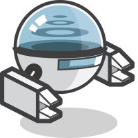

HISTORIA
Historia

Surgido de un iPhoneDevCamp organizado por Apple en 2008 de la mano de la empresa Nitobi Software. En 2011 Nitobi fue adquirida por el gigante Adobe. Después de esta adquisición el código de PhoneGap fue donado a la Fundación Apache pasando a llamarse Apache Cordova, pudiendo ser utilizado para construir otras herramientas. La última gran evolución de PhoneGap se produjo en 2012 con el nacimiento de PhoneGap Build, que permitía acabar con la engorrosa duplicidad de entornos de trabajo.
Vicente Zamora